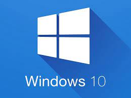

Elke computer heeft een Operating system. De os van deze computer is bijvoorbeeld widows 10. Het os zorgt ervoor dat de software met elkaar kan communiseren, Stuurt de randapperatuur aan en als laatste beheerd het het geheugen van de computer. Het OS is eigenlijk de butler van jou computer die samen werkt met de maneger(CPU). Hieronder nog een filpje over het OS.
Filmpje 